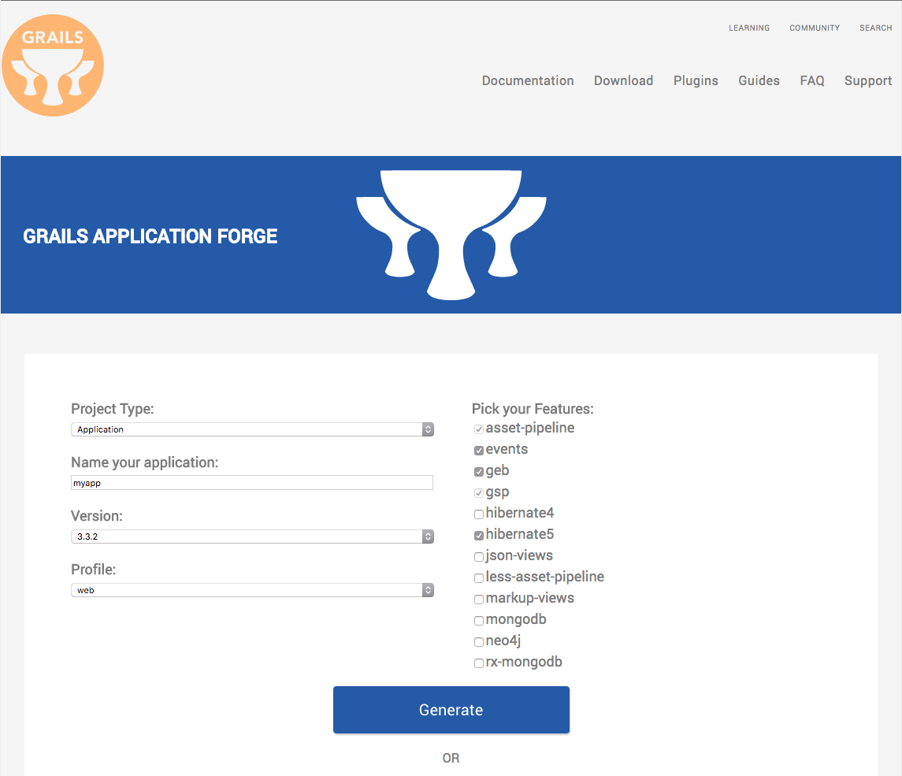
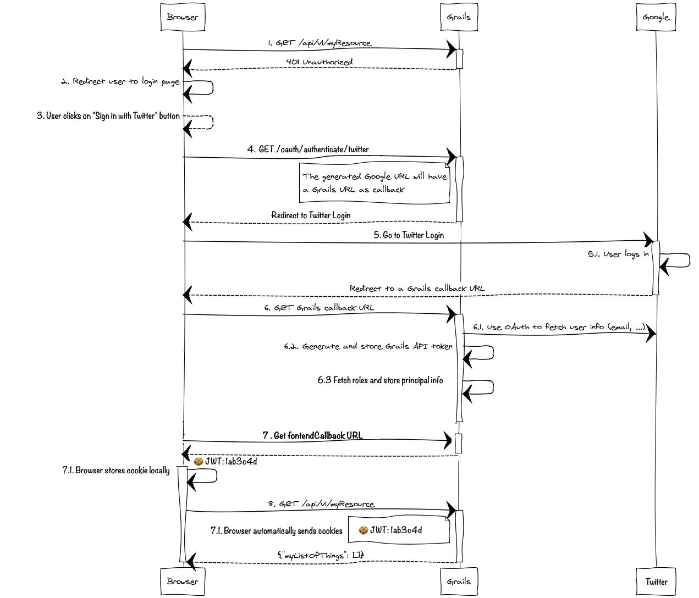
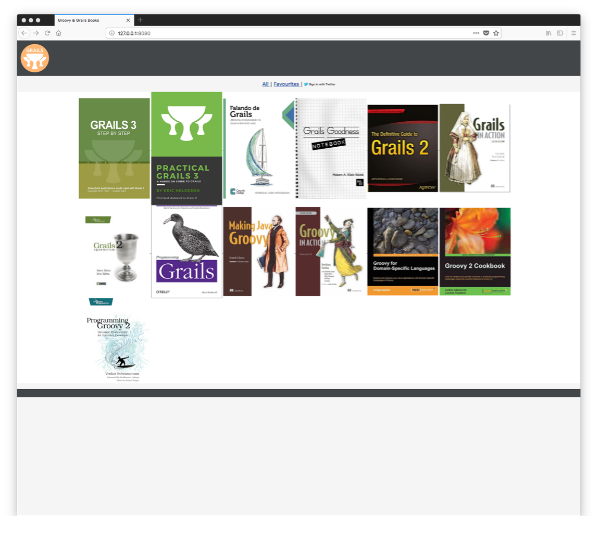
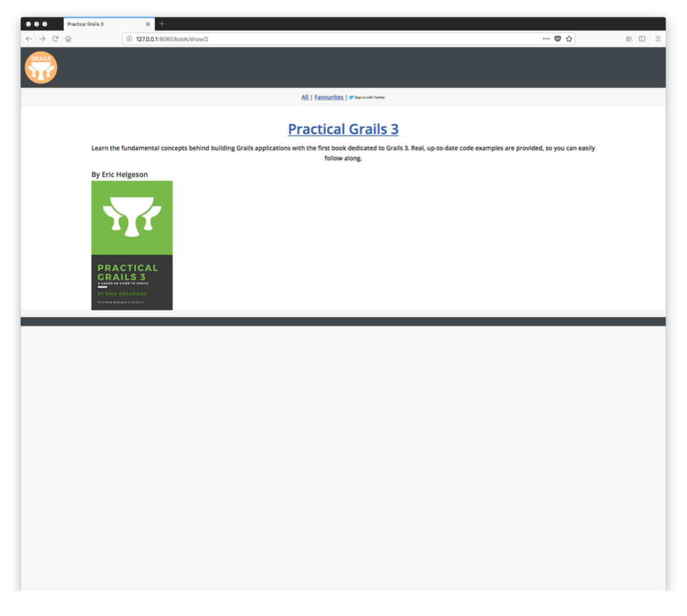
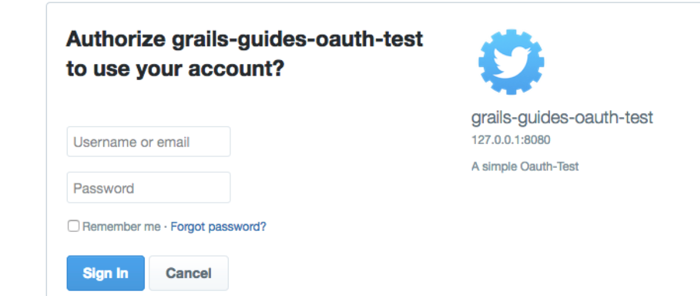
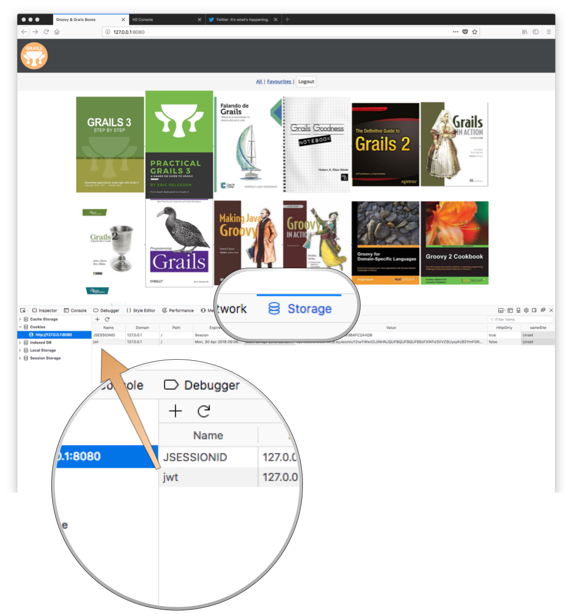
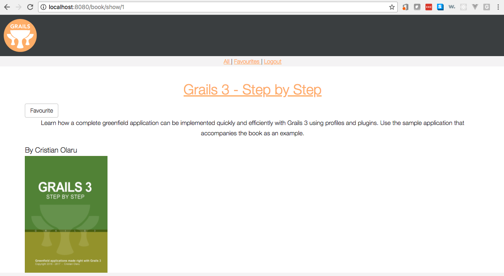
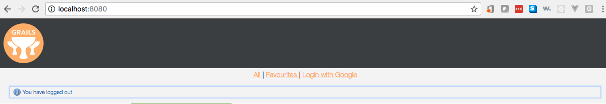

Twitter OAuth with Grails 3 and Spring Security REST
Authors: Ben Rhine, Sergio del Amo
Version: 4
Table of Contents
1 Getting Started
In this guide we will show you how to add Twitter OAuth2 authentication to your app using the Spring Security Rest plugin.
1.1 What you will need
1.2 How to complete the guide
If you want to start from scratch, create a new Grails 3 application using Grails Application Forge.
2 OAuth Authentication
OAuth2 is an industry-standard authentication protocol used by many Fortune 500 companies to secure websites and applications. The mechanism by which it works allows for a third-party authorization server to issue access tokens by the account owner approving access. In our case we will be using Twitter so in more laymen’s term a Twitter user approves their account to issue access tokens back to the requesting application.
2.1 Setup and Configure Twitter OAuth
To get Twitter OAuth up and running on your application will take a bit of work and configuration on the
Twitter Developer Console. Go ahead and sign in and click Apply

Select Get started with standard access

This gives you a quick description of how to connect your app to Twitter. Click on the link apps.twitter.com.

This will bring you to Twitters Application Management

From the Twitter Application Management page click Create New App
Twitter does not accept localhost so give it the localhost ip address instead 127.0.0.1.
|
Fill out the form with a app name, basic description, your web address, and a callback (where you want Twitter to
return to after you signin). Then click Create your Twitter application.

You should now see that your app was created successfully with Twitter.

Next select the Keys and Access Tokens tab

This is all the setup that needs to be done in Twitter. Save your Consumer Key and Secret for quick access later. Now we will take a look at setting up our application with our Twitter credentials.
3 Setting up your app
With all our Twitter configuration in place its time get our app configured to use security and connect using OAuth2 over REST through Twitter.
The next diagramm describes the security solution we are going to implement.

3.1 Add Security Dependencies
First thing we need to do is add the spring-security-core and spring-security-rest plugins to our build.gradle file.
build.gradle
link:../snippets/build.gradle[role=include]3.2 Custom Token Reader
We override the default token reader to read the JWT token from the cookies.
Implement a TokenReader
src/main/groovy/demo/JwtCookieTokenReader.groovy
link:../snippets/src/main/groovy/demo/JwtCookieTokenReader.groovy[role=include]Register it in grails-app/conf/spring/resources.groovy as tokenReader.
grails-app/conf/spring/resources.groovy
link:../snippets/grails-app/conf/spring/resources.groovy[role=include]
beans {
link:../snippets/grails-app/conf/spring/resources.groovy[role=include]
...
..
.
}3.3 Configure Security
With our dependencies added, we need to configure security.
Create a file application.groovy with the following content staticRules configuration.
grails-app/conf/application.groovy
link:../snippets/grails-app/conf/application.groovy[role=include]Add the next block to configure Grails Spring Security Rest Plugin:
grails-app/conf/application.groovy
link:../snippets/grails-app/conf/application.groovy[role=include]| 1 | You must disable bearer token support to register your own tokenReader implementation. |
| 2 | Enable anonymous access to URL’s where the Grails Spring Security Rest plugin’s filters are applied |
| 3 | Required secret which is used to sign the JWT tokens. |
| 4 | Callback url - after authentication with Twitter, this callback url will be invoked with a JWT token which authenticates the user |
| 5 | Which pac4j client to use; in our case the Twitter client |
| 6 | Supply your Twitter Consumer Key (API Key) as the System Property TWITTER_KEY when you start the app. |
| 7 | Supply your Twitter Consumer Secret (API Secret) as the System Property TWITTER_SECRET when you start the app. |
| 8 | Specific roles that Twitter authenticated users get. |
| 9 | We are going to authenticate our users only against Twitter. Thus, we use only the anonymous authentication provider. Read more about Authentication Providers in Spring Security Core Plugin documentation. |
To start the app you will need to supply client_id and client_secret as system properties. e.g.:
`./gradlew -DTWITTER_KEY=XXXXXX -DTWITTER_SECRET=XXXX bootRun
We want our app stateless by default with some endpoints which allow anonymous access.
grails-app/conf/application.groovy
link:../snippets/grails-app/conf/application.groovy[role=include]| 1 | stateless chain that allows anonymous access when no token is sent. If however a token is on the request, it will be validated. |
| 2 | /** is a stateless chain that doesn’t allow anonymous access. Thus, the token will always be required, and if missing, a Bad Request reponse will be sent back to the client. |
We are not persisting User information in the database. You may have noticed we don’t have User, Role, UserRole domain classes in the project. Neither we setup configuration values such as userLookUp.userDomainClass etc.
|
Now we override the login/auth view. So that we no longer show a username/password form in that page.
grails-app/views/login/auth.gsp
link:../snippets/grails-app/views/login/auth.gsp[role=include]We don’t include a button to SignIn with Twitter in that page because we have included that button in root layout main.gsp file.
3.4 Logout Handlers
Spring Security allows to register custom Logout Handlers.
Register a new logout handler to clear the JWT cookie. We reuse CookieClearingLogoutHandler which ships with Spring Security.
Modify grails-app/conf/spring/resources.groovy:
grails-app/conf/spring/resources.groovy
link:../snippets/grails-app/conf/spring/resources.groovy[role=include]
beans {
...
..
.
link:../snippets/grails-app/conf/spring/resources.groovy[role=include]
}Add the custom logout handler to Spring Security Core plugin logout.handlerNames.
grails-app/conf/application.groovy
link:../snippets/grails-app/conf/application.groovy[role=include]3.5 JWT Cookie
Create AuthController.groovy. When the user logs in successfully with Twitter, AuthController.success is invoked.
The path to AuthController.success is used in frontendCallbackUrl in application.groovy.
|
grails-app/controllers/demo/AuthController.groovy
link:../snippets/grails-app/controllers/demo/AuthController.groovy[role=include]| 1 | Responds a Cookie with the JWT token as value |
| 2 | Responding a cookie with the same name and maxAge equals 0 deletes the cookie. Thus, it logs out the user. |
| 3 | Prevents any Javascript executed in your site ( even your own javascript ) to do document.cookies and access the cookies |
| 4 | Cookie won’t leave if you do http:// instead of https://. You should use https in production. |
| 5 | Set the cookie expiration to match JWT expiration |
| 6 | Use the same cookie name, the custom tokenReader we previoulsy defined expects. |
| Due to the stateless nature of the security solution of this application. To log out a user involves the deletion the cookie containing his JWT token. |
The GSP of success action performs simple redirect to the home page. We do the redirect in the
client side to ensure the cookie is correctly set.
grails-app/views/auth/success.gsp
link:../snippets/grails-app/views/auth/success.gsp[role=include]3.6 Enhanced Logging
If you would like to enable enhanced logging so you can see what is returned when calling Twitter OAuth api, add the
following to the end of your logback.groovy file
grails-app/conf/logback.groovy
logger("org.springframework.security", DEBUG, ['STDOUT'], false)
logger("grails.plugin.springsecurity", DEBUG, ['STDOUT'], false)
logger("org.pac4j", DEBUG, ['STDOUT'], false)4 Building your app
We will quickly put together an app that lists books and allows us to favorite them. The favorite button will only be available once we have logged in using Twitter.
4.1 Your Domain
For your domain we will need to domain objects Book and BookFavourite. Create as follows
grails-app/domain/demo/Book.groovy
link:../snippets/grails-app/domain/demo/Book.groovy[role=include]grails-app/domain/demo/BookFavourite.groovy
link:../snippets/grails-app/domain/demo/BookFavourite.groovy[role=include]4.2 Your Data
At this point we will create our book data so we have something to work with moving forward. Go ahead and make your
BootStrap.groovy match the following.
| The required image resources are already added to the initial project for you. |
grails-app/init/demo/BootStrap.groovy
link:../snippets/grails-app/init/demo/BootStrap.groovy[role=include]4.3 Your Services
Next we need to create our services to return all our books and our favourite ones. First we leverage data services for our basic functionality.
grails-app/services/demo/BookDataService.groovy
link:../snippets/grails-app/services/demo/BookDataService.groovy[role=include]Create a GORM Data Service for BookFavourite domain class CRUD operations.
grails-app/services/demo/BookFavouriteDataService.groovy
link:../snippets/grails-app/services/demo/BookFavouriteDataService.groovy[role=include]| 1 | You can use JPA-QL Queries with GORM Data Services. |
4.4 Your Controllers
After we are done creating our service layer we need to get our controllers in place. First we have our basic book controller that can either return a list of all books or show a selected book.
grails-app/controllers/demo/BookController.groovy
link:../snippets/grails-app/controllers/demo/BookController.groovy[role=include]Next is our Favourites controller that can return a list of books we have favourited, and our action to favourite a desired book.
grails-app/controllers/demo/BookFavouriteController.groovy
link:../snippets/grails-app/controllers/demo/BookFavouriteController.groovy[role=include]| 1 | Call our custom favourite book finder |
| 2 | Call our custom findAll |
| 3 | Call to save our favourite |
4.5 Your Views
We are finally ready to connect everything up with a functional interface. First lets create an index page for our books
so we can see a list of them located at views/book.
grails-app/views/book/index.gsp
link:../snippets/grails-app/views/book/index.gsp[role=include]Next we will create a show.gsp also in views/books so that when we select a book we can view its details.
grails-app/views/book/show.gsp
link:../snippets/grails-app/views/book/show.gsp[role=include]In the above code we wrap our favourite button in a logged in check as we should only be able to favourite a book when we are logged in
Lastly we tie it all together in our layout file by adding a simple menu that allows us to select either all our books,
our favourite books, or login / logout. We add this between the navigation div and the <g:layoutBody/>.
grails-app/views/layouts/main.gsp
link:../snippets/grails-app/views/layouts/main.gsp[role=include]In the above code we:
-
Center our menu; link to list all books; link to list favourite books, "sign in with twitter" / logout
-
Include template with login link
-
Include template with logout link
-
Add a message block so we can view our login / logout messages
We create a template to contain our link to trigger our OAuth login through Twitter; the link /oauth/authenticate
is provided from the spring-security-rest plugin and ends with the provider we are using /twitter for the
link /oauth/authenticate/twitter. This will redirect you to the normal Twitter login page that you are already familiar with.
grails-app/views/auth/_loginWithTwitter.gsp
link:../snippets/grails-app/views/auth/_loginWithTwitter.gsp[role=include]
sign-in-with-twitter-link.png is already provided for you in assets
|
5 Running your Completed App
Run the app with Gradle bootRun task.
$ ./gradlew bootRunas previously. Now that our app is running navigate to http://localhost:8080 to see the following.

Select a book and see that no Favourite button is available when not signed in.

Click Login with Twitter from our menu and enter your twitter credentials:

After you are succesfully redirected, you can inspect and discover the JWT token stored as a Cookie:

Select a book and see that the Favourite button is now available.

Click on logout and you will see our logout message displayed.

6 Next Steps
To further your understanding read through Grails Spring Security Rest and Spring Security Core documentation.